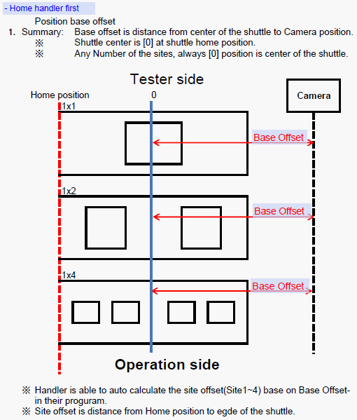
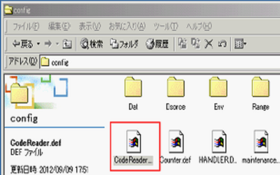
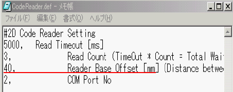
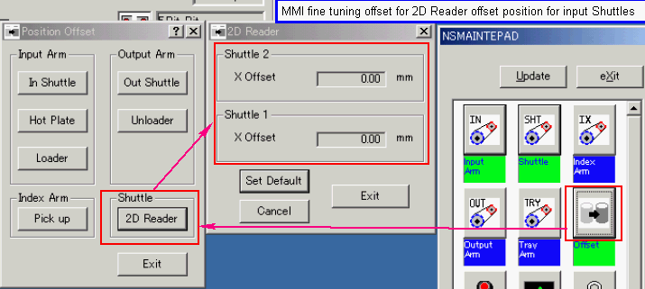

Service History
Subject: NS-6000 Shuttles did not stop at 2D position after CPU Board upgrade
Handler Model: NS-6000
Controller: SRC520
Date: 10 June 2013
Symptom
AMD Suzhou seek their local support for upgrading NS6000 from win95 to win 2000, I remembered last time you say from win95 to win2000 upgrading, it may also including CPU upgrading Kit, motor interface board, etc. this upgrading is due to NS6000 ver 12.11 only support win2000 above.
Now win2000 OS upgrading complete, but handler not stop under 2D position when 2D enabled In ver 12.11 handler GUI. Pls inform how to set up 2D in SPEL since this handler never run 2D decode since win95 handler software installed before,
can you help to send the procedures of 2D set up (teaching points, etc) to us, meanwhile, pls confirm win95 to win2000 upgrading for ver 12.11 run, it is OS upgrading only or any hardware upgrading introduced as well.
The handler didn't stop at 2D position at all and go to standby position waiting for pickup for testing, or the handler stopped at wrong position and wait for 2D decode?
From what you described, it looks the handler didn't stop at all as if no 2D turn on, right? Pls inform which tester GPIB interface selected? Epson type A or anything else In GUI? No 2D teaching point is because no 2D verification conducted since previously win 95 not supported for ver 12.11. COM2 in 2D PC is used for 2d decode, pls check 2D PC
COM2 settings and the RS232 cable connection to handler COM, pls check it.
Current OS: Windows 2000
MMI Version: 12.11
Action

Advise customer to open C:\NS6000\Config\CodeReader.def
Edit the "Reader Base Offset" value to the correct camera Base Offset.
|
 |
 |
For fine tuning of shuttle position for camera viewing at Input Shuttles,
in NS-taskbar, click [Maintenance] pad -> Offset -> Shuttle- [2D reader], change the required X offset.

Cause
Base Offset for Camera to Shuttle jig centre was not defined.